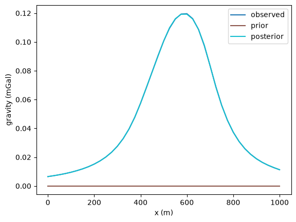
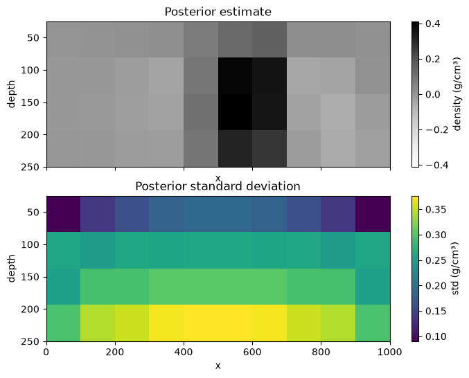

Gravity: density below the surface#
Gravity measured along a line at the surface depends on how dense the ground is below it. This notebook finds the density anomaly of 40 buried prisms (a 10 x 4 grid, 1000 m across and 25 to 250 m deep) from the vertical gravity measured at 41 points above them.
In the words of the terminology:
the state is the density anomaly of each prism (g/cm³);
the observations are the gravity anomalies at the surface (mGal);
the forward operator is Newton’s law for a rectangular prism: the gravity at each point from a unit density in each prism;
the prior is no anomaly anywhere, with a prior covariance that makes neighboring prisms alike, and the observation covariance says the measurements are good to 1% of the largest signal.
import matplotlib.pyplot as plt
import numpy as np
import pandas as pd
import fips
from fips.visualization import plot_comparison
The data and the geometry#
The observed gravity anomalies, and where the prisms are.
gravity = np.array(
[
6.5112333e-03,
7.1144759e-03,
7.8050213e-03,
8.6004187e-03,
9.5228049e-03,
1.0600394e-02,
1.1869543e-02,
1.3377636e-02,
1.5187140e-02,
1.7381291e-02,
2.0071869e-02,
2.3409173e-02,
2.7592423e-02,
3.2872699e-02,
3.9524661e-02,
4.7739666e-02,
5.7427097e-02,
6.8126652e-02,
7.9261565e-02,
9.0330964e-02,
1.0070638e-01,
1.0950167e-01,
1.1588202e-01,
1.1936106e-01,
1.1961197e-01,
1.1617789e-01,
1.0868957e-01,
9.7370419e-02,
8.3429883e-02,
6.9002570e-02,
5.6079733e-02,
4.5525921e-02,
3.7267881e-02,
3.0880404e-02,
2.5919366e-02,
2.2024198e-02,
1.8925481e-02,
1.6427182e-02,
1.4387142e-02,
1.2701558e-02,
1.1293783e-02,
]
) # mGal
stations = np.linspace(0, 1000, len(gravity)) # where gravity was measured, m
x_edges = np.linspace(0, 1000, 11) # the prisms' edges across, m
depth_edges = np.linspace(25, 250, 5) # and down, m
x_centers = (x_edges[:-1] + x_edges[1:]) / 2
depth_centers = (depth_edges[:-1] + depth_edges[1:]) / 2
Labels and vectors#
fips keeps a label beside every number. Each prism is labeled by where it is,
its x and its depth; each observation by its x. A Vector is values on
such labels: the prior is no anomaly in any prism, in a block named
density, and the observations are a block named gravity.
prisms = pd.MultiIndex.from_product([x_centers, depth_centers], names=["x", "depth"])
prior = fips.Vector.from_series(
pd.Series(0.0, index=prisms, name="prior"), block="density"
)
points = pd.Index(stations, name="x")
obs = fips.Vector.from_series(
pd.Series(gravity, index=points, name="observed"), block="gravity"
)
prior.space
Space(density: 40 x ['x', 'depth'])
The forward operator#
The gravity of a rectangular prism of unit density has a closed form. The
matrix has one row per observation and one column per prism, in the order of
the labels above (x outer, depth inner), so fips.Operator puts the
observations’ labels on its rows and the prisms’ on its columns.
G = 6.67e-4 # the gravitational constant, in units that give mGal
def prism_integral(dx, dz):
"""Return the indefinite integral of the vertical gravity of a 2D prism."""
return dz * np.arctan(dx / dz) + dx / 2 * np.log(dz**2 + dx**2)
def prism_gravity(stations, x_edges, depth_edges):
"""Return the gravity at each station of a unit density in each prism (stations x prisms)."""
columns = []
for x1, x2 in zip(x_edges[:-1], x_edges[1:], strict=True):
for z1, z2 in zip(depth_edges[:-1], depth_edges[1:], strict=True):
a, b = x1 - stations, x2 - stations
columns.append(
2
* G
* (
prism_integral(b, z2)
- prism_integral(b, z1)
- prism_integral(a, z2)
+ prism_integral(a, z1)
)
)
return np.column_stack(columns)
forward = fips.Operator(
prism_gravity(stations, x_edges, depth_edges), obs.space, prior.space
)
forward.shape
(41, 40)
The covariances#
Neighboring prisms should be alike: the prior covariance correlates two prisms
by their distance across (over 200 m) and in depth (over 100 m), with a
standard deviation of 0.5 g/cm³. It is a Kronecker product of two
exponential correlations, kept as its two small factors. The observations’
errors are independent, at 1% of the largest signal.
prior_cov = fips.Kronecker(
fips.Exponential("x", 200.0), fips.Exponential("depth", 100.0)
).with_std(0.5)
obs_cov = fips.Independent().with_std(0.01 * gravity.max())
The problem and its solution#
A Problem puts the inputs together and checks that every label matches.
fips.solve returns the Posterior: the estimate, its uncertainty and the
diagnostics of the solve.
problem = fips.Problem(
prior=prior, prior_cov=prior_cov, obs=obs, obs_cov=obs_cov, forward=forward
)
post = fips.solve(problem)
post.summary()
| gamma | n_state | n_obs | dofs | chi2 | reduced_chi2 | r2 | rmse | uncertainty_reduction | |
|---|---|---|---|---|---|---|---|---|---|
| 0 | 1.0 | 40 | 41 | 16.05898 | 2.723385 | 0.066424 | 0.999982 | 0.000162 | 0.456763 |
The DOFS say how many independent pieces of information the 41 measurements give about the 40 prisms. The reduced chi-squared is near 1 when the covariances fit the data; here it is well below, because these synthetic observations have no noise at all.
The fit to the data#
plot_comparison draws the observations, what the prior predicts
(problem.predict, the forward operator times the prior) and what the
estimate predicts (post.modeled_obs) on one axes.
def named(vector, name):
"""Return a vector of one block as a Series on its own labels, named for the legend."""
return vector.to_series().droplevel("block").rename(name)
fig, ax = plot_comparison(
named(problem.obs, "observed"),
named(problem.predict(problem.prior), "prior"),
named(post.modeled_obs, "posterior"),
)
ax.set(xlabel="x (m)", ylabel="gravity (mGal)");

The density below#
The estimate and its standard deviation, as maps of the prisms:
to_xarray() puts a block on its levels, x and depth.
estimate = post.estimate["density"].to_xarray()
std = np.sqrt(post.variances["density"].to_xarray())
fig, axes = plt.subplots(2, 1, figsize=(8, 6), sharex=True)
estimate.plot(
ax=axes[0],
x="x",
y="depth",
yincrease=False,
cmap="Greys",
cbar_kwargs={"label": "density (g/cm³)"},
)
axes[0].set_title("Posterior estimate")
std.plot(
ax=axes[1],
x="x",
y="depth",
yincrease=False,
cmap="viridis",
cbar_kwargs={"label": "std (g/cm³)"},
)
axes[1].set_title("Posterior standard deviation");

How much to trust the data#
The regularization factor gamma divides the observation covariance: above
1 the solve trusts the data more, below 1 the prior. The posterior keeps its
factorization, so with_gamma gives each gamma’s posterior without solving
again, and the rows of summary() stack into a table.
pd.concat(
[post.with_gamma(g).summary() for g in (0.1, 0.3, 1.0, 3.0, 10.0)],
ignore_index=True,
)
| gamma | n_state | n_obs | dofs | chi2 | reduced_chi2 | r2 | rmse | uncertainty_reduction | |
|---|---|---|---|---|---|---|---|---|---|
| 0 | 0.1 | 40 | 41 | 12.410882 | 1.221866 | 0.029802 | 0.999911 | 0.000363 | 0.391886 |
| 1 | 0.3 | 40 | 41 | 13.865537 | 1.808107 | 0.044100 | 0.999946 | 0.000282 | 0.419185 |
| 2 | 1.0 | 40 | 41 | 16.058980 | 2.723385 | 0.066424 | 0.999982 | 0.000162 | 0.456763 |
| 3 | 3.0 | 40 | 41 | 18.042533 | 3.426285 | 0.083568 | 0.999996 | 0.000076 | 0.491897 |
| 4 | 10.0 | 40 | 41 | 19.627809 | 3.867133 | 0.094320 | 0.999999 | 0.000030 | 0.522448 |